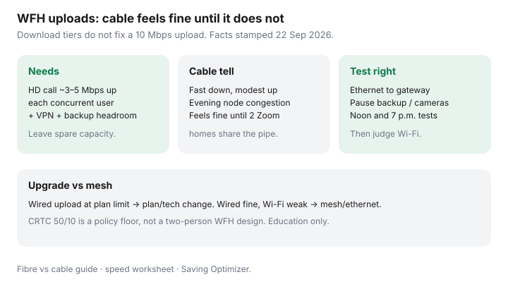

Internet · Canada
Upload Speed for Working From Home in Canada: Why Cable Plans Feel Fine Until They Don’t
Canadian work-from-home households often upgrade the download tier when the real bottleneck is upload. Asymmetric cable feels fine for Netflix and one quiet Teams call — until a second call, a VPN file sync, and a cloud backup share the same modest uplink. This guide separates plan limits from Wi-Fi lies.
Disclosure: Mesh systems, routers, and ethernet adapters are offer types only — no claimed live retailer partnership. ISP plan upgrades are not an affiliate pitch. Education only.
Key takeaways
- Budget upload for concurrent calls + VPN + backup, not a single marketing number.
- Cable’s asymmetric design explains the “fine until it isn’t” cliff; fibre’s upload is usually the tell (fibre vs cable).
- Run wired tests at noon and evening before you blame the ISP or buy mesh.
- CRTC’s 50/10 broadband policy floor (facts stamped 22 Sep 2026 context) is not a two-person WFH design target.
- If wired upload is maxed, change plan/technology; if wired is fine, fix Wi-Fi.
Upload needs for video calls, VPN, and cloud backups

| Activity | Upload planning note |
|---|---|
| HD video call (per person) | Often about 3–5 Mbps up when the camera is on; stack for concurrent household workers |
| VPN + large file sync | Bursty; can saturate a 10 Mbps uplink for minutes |
| Cloud backup / photo library | Background upload that ruins calls if uncapped |
| Security cameras | Continuous uplink; schedule or throttle quality |
Why asymmetric cable feels fine until it does not
DOCSIS cable plant historically spends capacity on download. A 500/20 or 1 Gbps/30-class card looks modern in a store flyer and still choking when two adults present live decks. Evening neighbourhood congestion narrows the usable uplink further. The cliff feels sudden because download-heavy evenings never stressed the plan.
Fibre vs cable upload reality checks
- Confirm FTTH versus cable versus DSL at the unit — marketing “fibre” on the truck is not always glass to the suite.
- Symmetrical or high-upload fibre tiers fix many WFH complaints without a gigabit download vanity upgrade.
- Where fibre is absent, ask for the highest upload cable tier’s true night performance, or an independent on the same plant with a clearer uplink story.
Speed-test method that isolates Wi-Fi lies
- Ethernet from laptop to gateway/ONT. Disable VPN for the baseline test, then retest with VPN on.
- Pause cloud backup, camera uploads, and large Steam downloads.
- Test at ~noon and ~7 p.m.; record download, upload, latency, and jitter.
- Repeat on Wi-Fi from the desk. Gap = coverage problem; parity at a low upload = plan/tech problem.
When a plan upgrade beats mesh gadgets
Buy mesh or a better AP when wired upload meets the plan and the office still drops. Upgrade the plan or change technology when wired upload is already pinned during work blocks. Rental pods that add $10–$15 a month do not create upload capacity that is not in the last mile — see mesh vs rental pods.
WFH upload decision table
| Wired noon/evening result | Next step |
|---|---|
| Upload near plan cap; calls suffer | Higher upload tier or fibre/independent quote |
| Upload fine wired; weak at desk | Ethernet run, better AP placement, or mesh |
| Latency/jitter wild only on VPN | Employer VPN path / split tunnelling discussion — not only ISP megabits |
| Backup saturates uplink | Schedule backup off-cam hours; then reassess plan |
Sources & date stamps
- CRTC broadband policy context — 50/10 as a Canadian policy reference point (facts stamped 22 Sep 2026); not a WFH engineering spec.
- Saving Optimizer: fibre vs cable, speed worksheet.
- Vendor call bandwidth documentation varies — treat table figures as planning allowances.
Frequently asked questions
How much upload do I need for WFH?
Plan allowances, not lab law: budget roughly 3–5 Mbps upload per concurrent HD video participant, then add VPN and cloud-backup headroom. Two overlapping calls plus backup often wants well above a 10 Mbps cable upload.
Why does my cable plan feel fine until it does not?
Asymmetric cable sells large downloads with modest uploads. One call works; two calls, a VPN, and a camera upload collide. Evening node congestion makes the cliff feel sudden.
How do I stop Wi-Fi from lying on a speed test?
Ethernet to the gateway, pause backups and cameras, test at noon and evening, then compare to a phone on Wi-Fi in the office. If wired hits the plan and Wi-Fi does not, buy coverage — not only megabits.
Is fibre always the WFH answer?
Where FTTH is available, symmetrical or high uploads usually help. Where it is not, a higher cable upload tier or a different provider on better plant can beat a mesh shopping spree. Confirm the technology at the address.
Should I upgrade the plan or buy mesh first?
If wired upload is already at the plan ceiling during work hours, upgrade or change technology. If wired is fine and the office is weak, fix Wi-Fi or run ethernet.